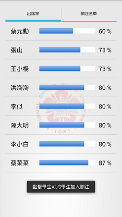

<!DOCTYPE html>
<html lang="en">

</html>
<html>

<head>
	<meta charset="utf-8" />
	<!--行動裝置不允許縮放-->
	<meta name="viewport" content="width=device-width, initial-scale=1, user-scalable=no" />
	<link rel="stylesheet" href="assets/css/main.css" />
	<title>Noel website</title>
</head>

<body class="preload">

	<!--導覽-->
	<nav id="nav">
		<ul class="container">
			<li><a href="index.html">home</a></li>

		</ul>
	</nav>

	<!--首頁-->
		<div class="container">
			<div class="row">
				<!--Bootstrap 4 Grid 的切版-->
	

					<header >
                        <div style="text-align:center;"><h1><strong><br>成大校園資訊APP</strong></h1></div>
                    
							<h3><b><u>成大Campus</u> 為便利成大的校園師生生活，整合了一些在校園會使用的功能</b>
								<br><b>使用者分為學生與教師兩端，依據不同身份登入而展示出不同功能層面。</b>
							</h3>
							<p style="font-size:1.2em;">
								<b style="color:red;">√ </b>主要運用Android系統的手機平台使用，讓學生與教師能在校園中使用多項功能
								<br><b style="color:red;">√ </b>校園活動佈告欄可即時閱覽校園最新活動資訊
								<br><b style="color:red;">√ </b>具有課堂點名功能，學生可自行簽到或由老師隨機抽點
								<br><b style="color:red;">√ </b>校園導覽結合了Google Maps API，可查閱校園景點或各大樓位置
								<br><b style="color:red;">√ </b>師生導談、代辦事項結合了Google Calendar，方便師生規劃日程
							</p>
                            <br>
                            <br>
                        <a style="float:left;padding:15px 20px;"></a>
                        <a style="float:left;padding:15px 20px;"></a>
                        <a style="float:left;padding:15px 20px;"></a>
                        <a style="float:left;padding:15px 20px;"></a>
                        <a style="float:left;padding:15px 20px;"></a>
                        <a style="float:left;padding:15px 20px;"></a>
                     
					</header>

                    


			</div>
		</div>


	<!-- Scripts -->
	<script src="assets/js/jquery.min.js"></script>
	<script src="assets/js/jquery.scrolly.min.js"></script>
	<script src="assets/js/browser.min.js"></script>
	<script src="assets/js/breakpoints.min.js"></script>
	<script src="assets/js/util.js"></script>
	<script src="assets/js/main.js"></script>

</body>

</html>